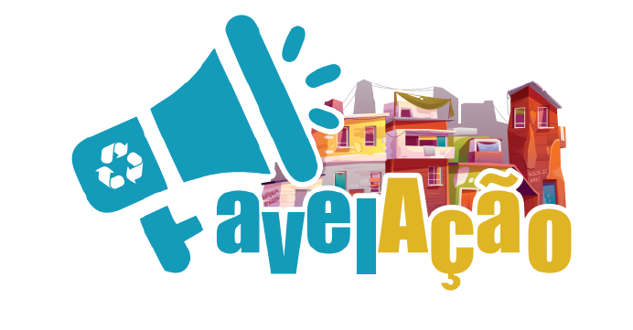

<!DOCTYPE html>
<html lang="pt-BR">
    <head>
        <meta charset="UTF-8">
        <meta name="viewport" content="width=device-width, initial-scale=1.0">
        <title>Locais de resíduos</title>
        <link rel="icon" href="./img/logo-removebg-preview.png">
        <link rel="stylesheet" href="./css/style.css">
        <link rel="stylesheet" href="./css/locais.css">
        <link rel="stylesheet" href="https://unpkg.com/leaflet@1.7.1/dist/leaflet.css"
   integrity="sha512-xodZBNTC5n17Xt2atTPuE1HxjVMSvLVW9ocqUKLsCC5CXdbqCmblAshOMAS6/keqq/sMZMZ19scR4PsZChSR7A=="
   crossorigin=""/>
   <script src="https://unpkg.com/leaflet@1.7.1/dist/leaflet.js"
   integrity="sha512-XQoYMqMTK8LvdxXYG3nZ448hOEQiglfqkJs1NOQV44cWnUrBc8PkAOcXy20w0vlaXaVUearIOBhiXZ5V3ynxwA=="
   crossorigin=""></script>
    </head>
    <body>
        <div id="pagina-cadastro"><!---Mudar o nome-->
            <aside>
                <header>
                    

                    <h2>Cadastre aqui um ponto onde tenha resíduos.</h2>
                    <p>A comunidade precisa da sua ajuda</p>
                    <br>
                    
                </header>
            </aside>
            <div id="mapid"></div>
            
            <a href="cadastro-residuos.html" class="create-residuos" title="Cadastre um ponto de resíduos">
                
            </a>
        </div>
        <script src="js/mapa-residuos.js"></script>
    </body>
</html>